동덕여자대학교 2027 면접 가이드북
동덕여자대학교 면접에서 실제로 나온 질문 43건, 내 생기부에서 질문을 뽑는 전환 규칙 20개. 선배 후기 2020~2026 관측과 2027 공식 요강으로 재구성한 현학적 연구소 편집본.
동덕여자대학교 2027 면접 가이드북은 전형별 면접 제원, 유형별 기출과 예상 질문, 답변 설계 순서를 담은 2027 대비 문서입니다. 16,500원, 보안 리더 열람.
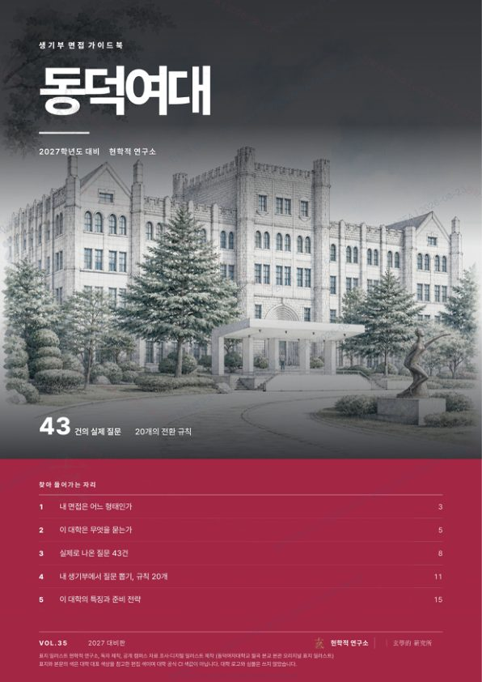
동덕여자대학교 2027 면접 가이드북
16,500원부가세 포함, 보안 리더 열람- 실제 질문43건, 선배 후기 2020~2026 관측
- 전환 규칙20개, 내 생기부에서 질문 뽑기
- 전형 분석4개 전형, 제원 4항목
- 형태PDF 18면, 브라우저 보안 리더
- 인쇄계정당 3회, 원본 파일 비제공
보안 리더 준비 중. 준비되는 대로 이 면에서 판매하고 공지에 기록.
지면 미리보기
판매본 그대로의 지면. 본문은 흐림 처리, 구매 후 전체가 선명하게 열립니다.
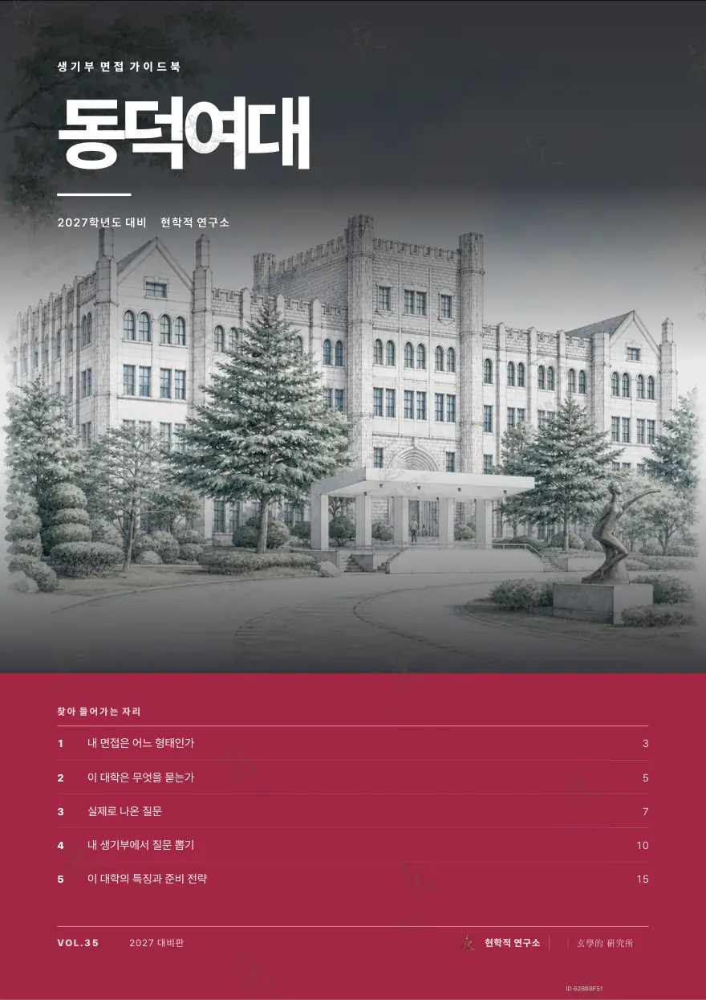
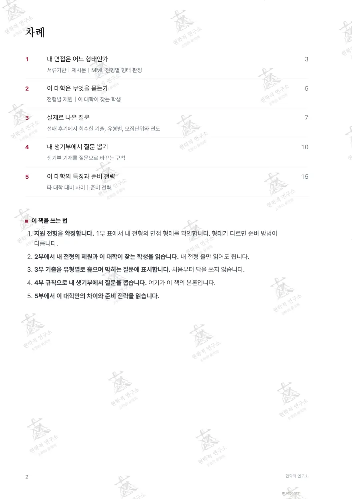
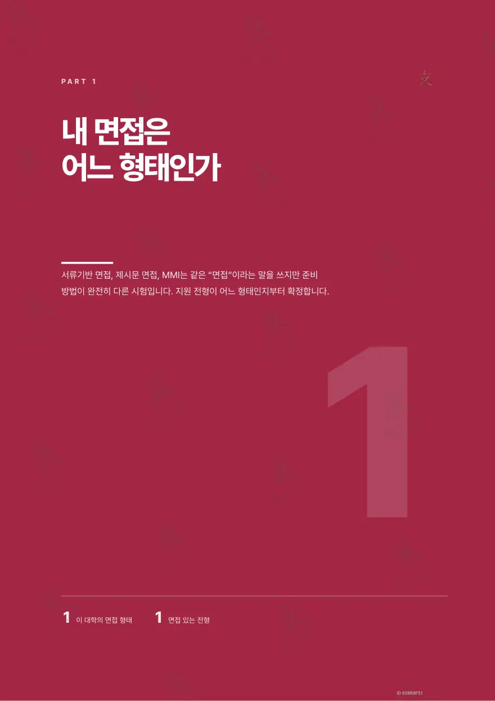
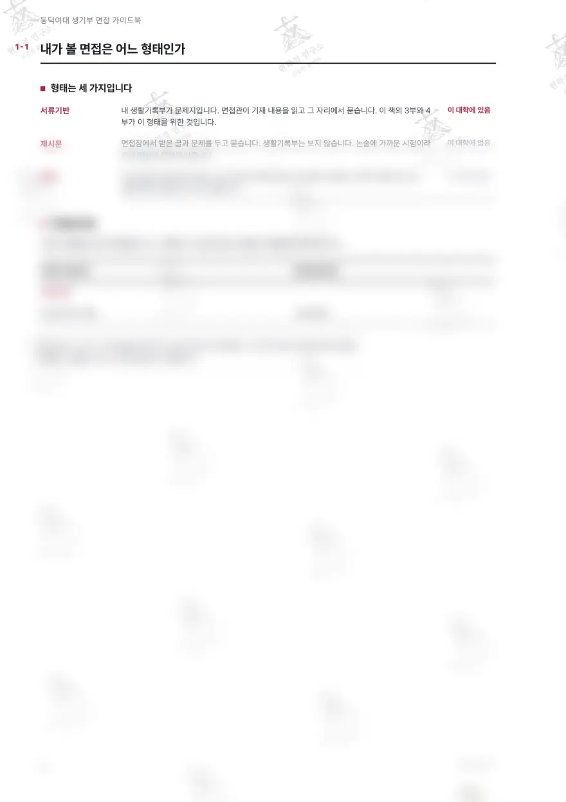
구매 후 선명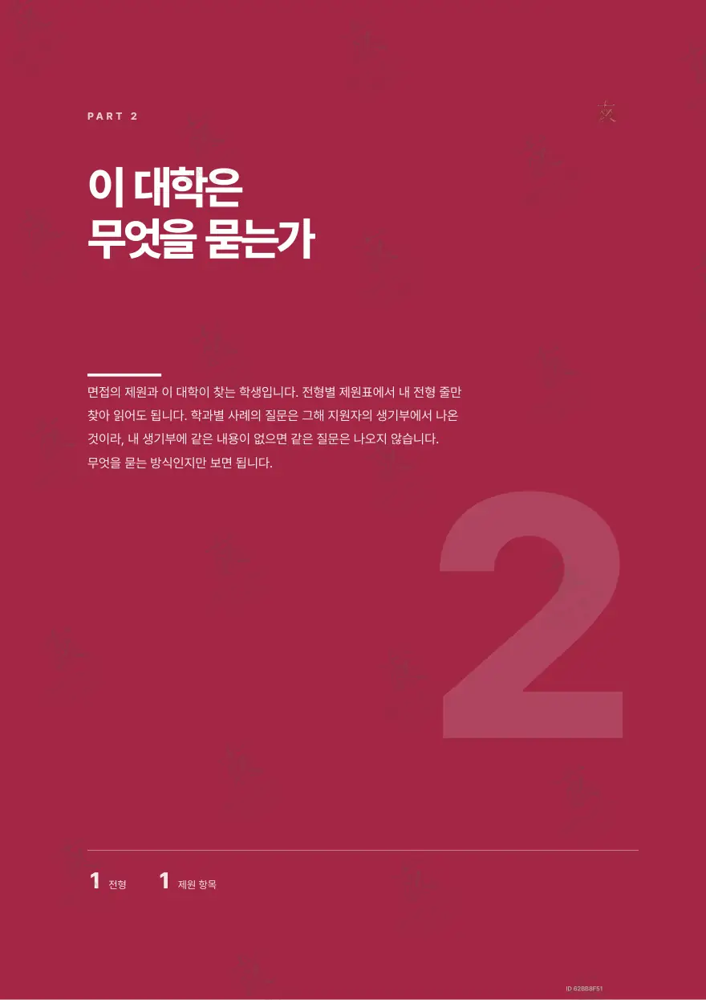
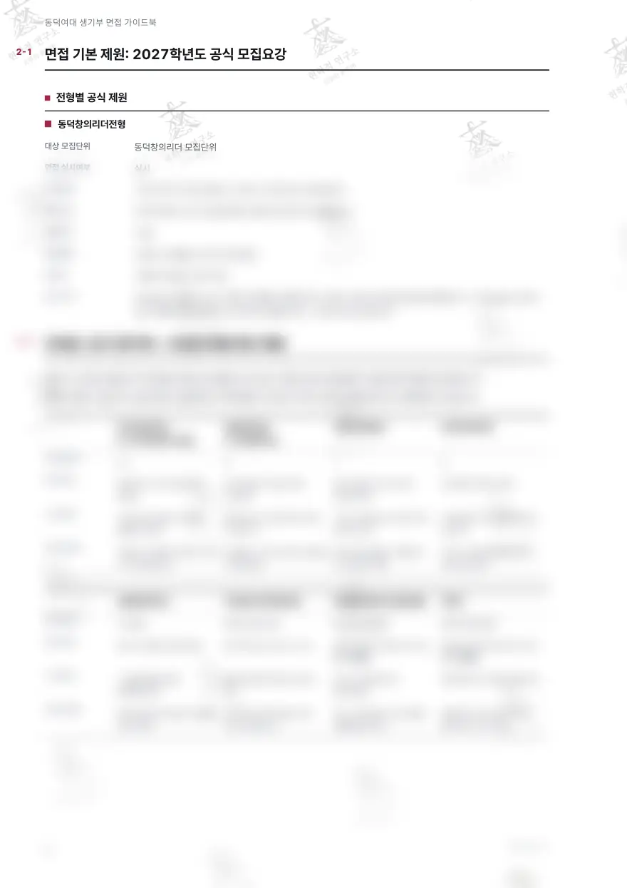
구매 후 선명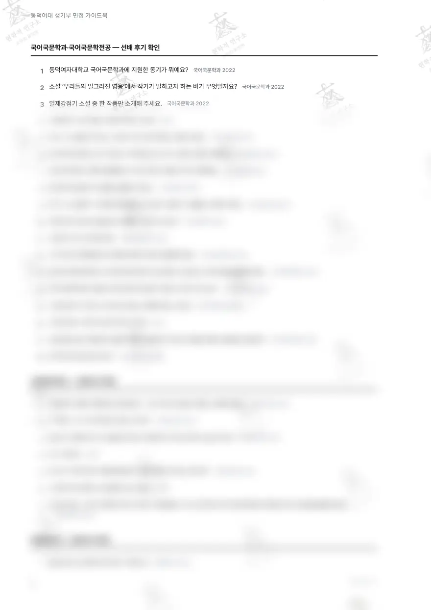
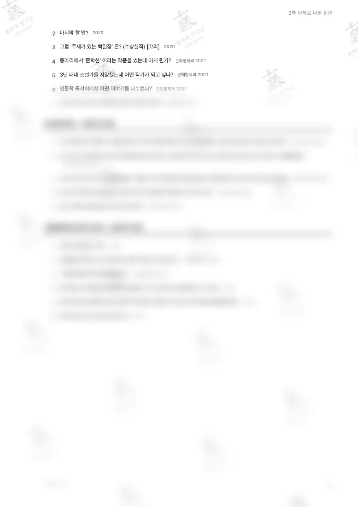
구매 후 선명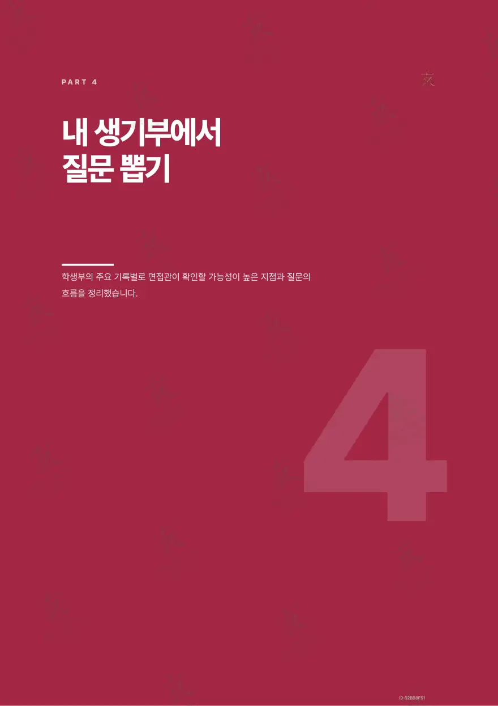
구매 후 선명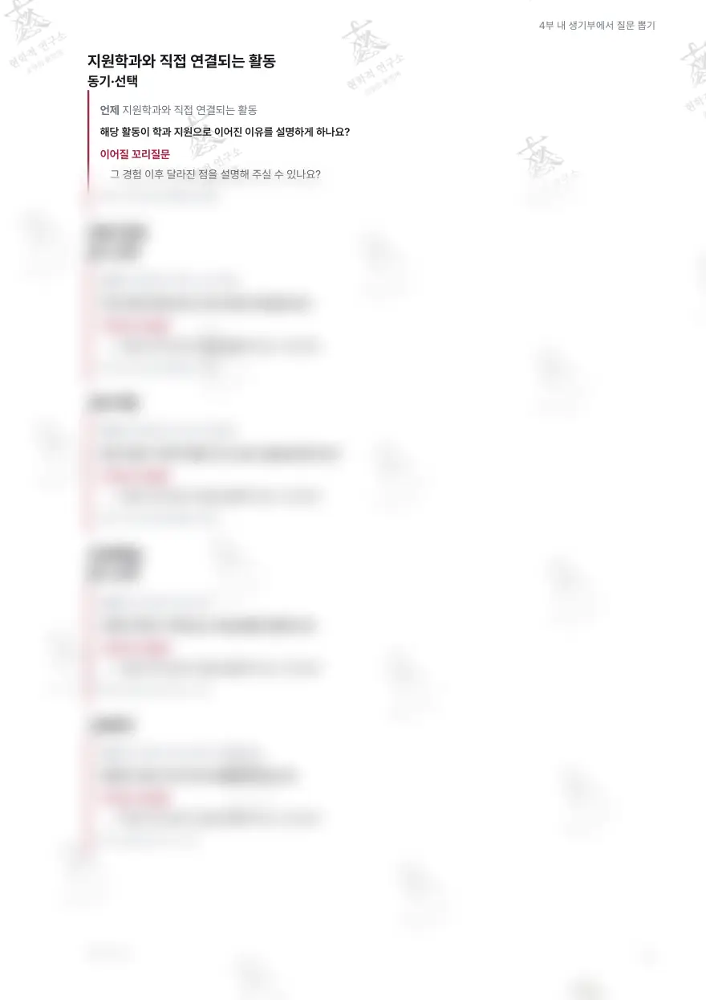
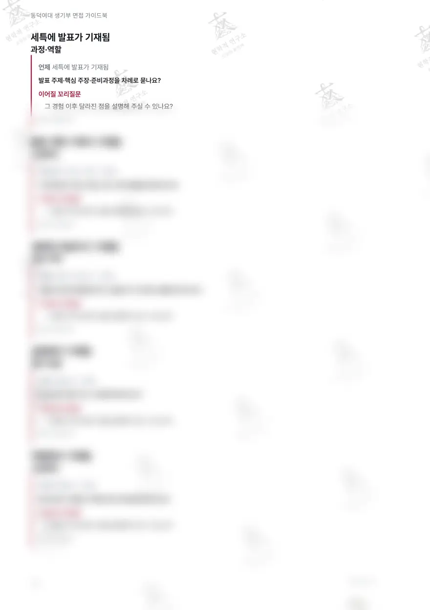
구매 후 선명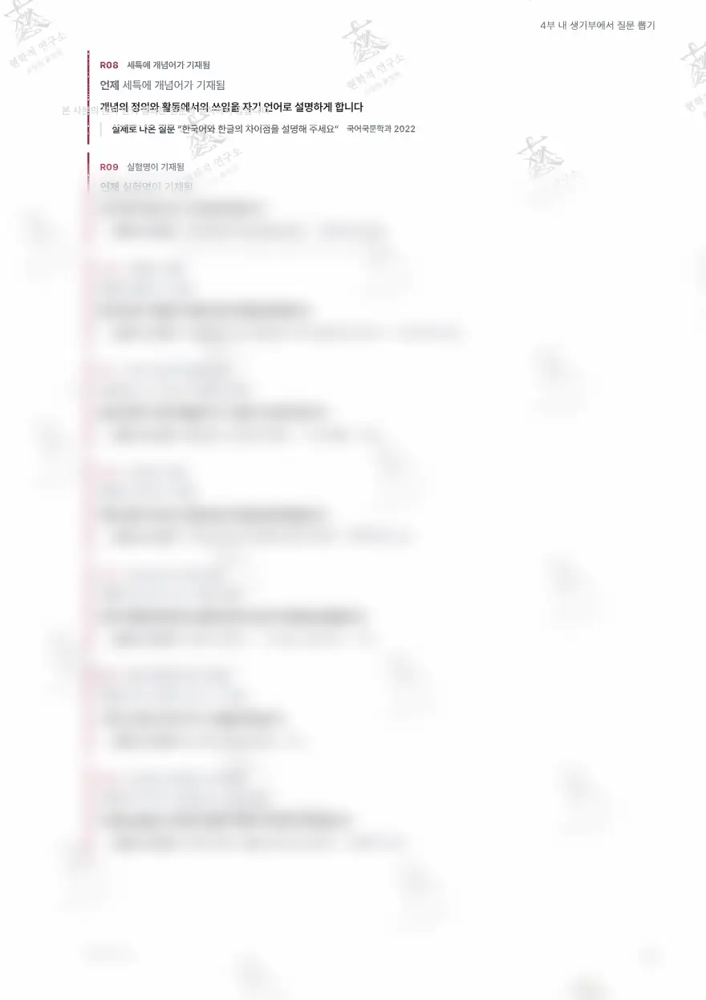
구매 후 선명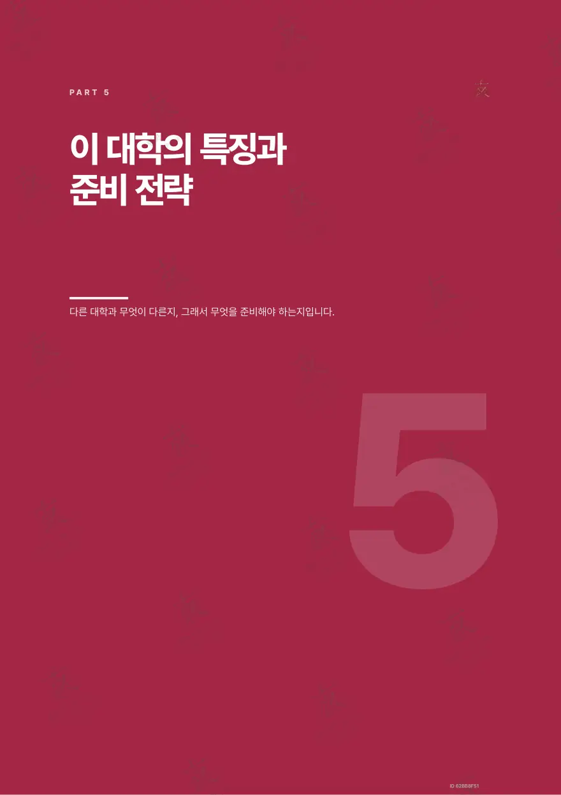
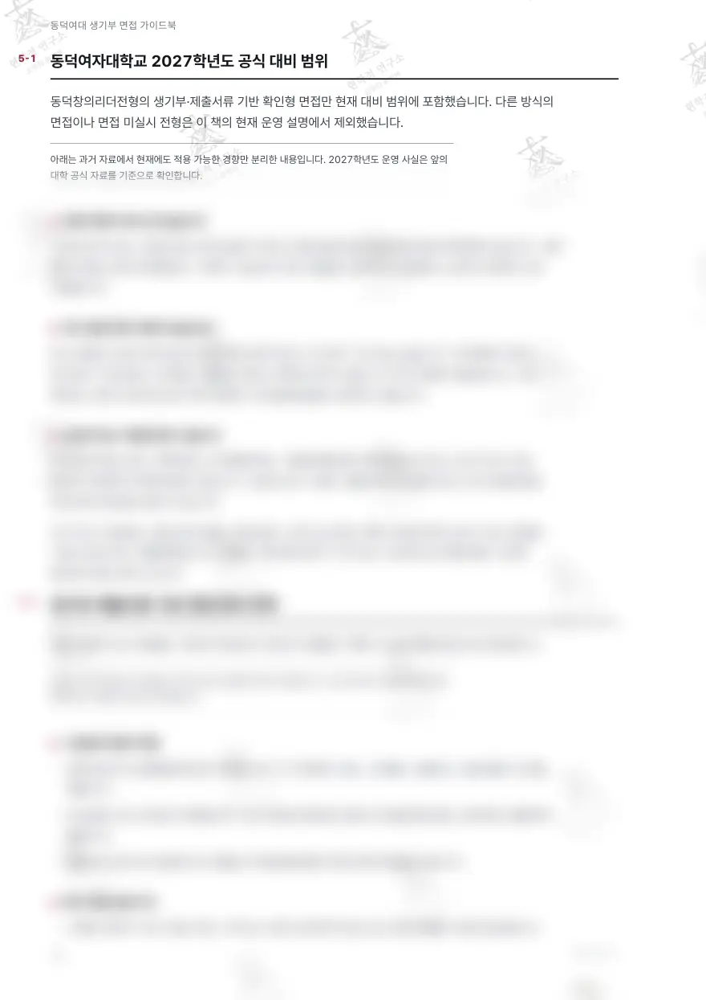
구매 후 선명각 지면 아래 숫자는 실제 면 번호입니다. 워터마크는 열람 계정마다 다르게 찍힙니다.
다섯 부로 끝나는 구성
표지의 차례 그대로. 각 부의 수치는 이 책에서 셉니다.
내 면접은 어느 형태인가
서류기반｜제시문｜MMI, 전형별 형태 판정
이 대학은 무엇을 묻는가
전형별 제원｜이 대학이 찾는 학생
실제로 나온 질문
선배 후기에서 회수한 기출 43건, 유형별, 모집단위와 연도
내 생기부에서 질문 뽑기
전환 규칙 20개
이 대학의 특징과 준비 전략
타 대학 대비 차이｜준비 전략
이 대학의 면접, 판정부터
1부와 2부가 하는 일. 형태가 다르면 준비 방법이 다릅니다.
- 동덕창의리더전형서류확인형(순수형)
질문 유형 분포
책에 실린 수. 관측 원문에 그 변형과 파생 문항을 더해 싣습니다.
| 유형 | 수록 |
|---|---|
| 국어국문학과, 국어국문학전공 | 18건 |
| 사회복지학과 | 7건 |
| 문예창작과 | 7건 |
| 보건관리학과 | 5건 |
| 식품영양학과, 학과 미기재 | 6건 |
맛보기
유형별 첫 수록 질문. 출처는 자료집 기관명만 표기.
- 국어국문학과, 국어국문학전공
동덕여자대학교 국어국문학과에 지원한 동기가 뭐예요?
출처: 신명여고 자료실 - 사회복지학과
사회복지 관련된 책을 많이 읽었네요. 그 중 가장 인상깊은 책을 소개해주세요.
출처: 신명여고 자료실 - 문예창작과
웹소설과 순수문학 중 무엇이 가치있나?
출처: 신명여고 자료실 - 보건관리학과
자소서를 보면 “팬데믹 시대를 살아갈 10대 어떻게 할까?”라는 책을 읽었다고 했는데 본인은 어떨 것 같아요?
출처: 신명여고 자료실
전체 43건과 유형 해설은 책 본문에.
전환 규칙 20개, 이 책의 본론
생기부의 기재 한 줄이 어느 질문으로 바뀌는지. 규칙마다 실제 나온 질문과 꼬리질문이 붙습니다.
언제 지원학과와 직접 연결되는 활동
언제 진로희망이 학년 사이 바뀜
언제 진로희망이 장기간 일관됨
규칙의 질문 틀과 실제 질문, 꼬리질문 20세트는 본문에서. 위 미리보기 지면에 흐림 처리로 실려 있습니다.
5부 준비 전략
이 대학만의 차이에서 나온 전략. 제목만 싣습니다.
- 0110분용 학생부 목록
- 02독서, 작품 검증 카드
- 03전공 개념 30초 설명
- 04진로 변화 지도
- 05공동체 사례의 행동화
- 06당일 확인
준비 중인 동안
판매 중인 다른 대학 가이드북 먼저. 판매 개시는 공지로.